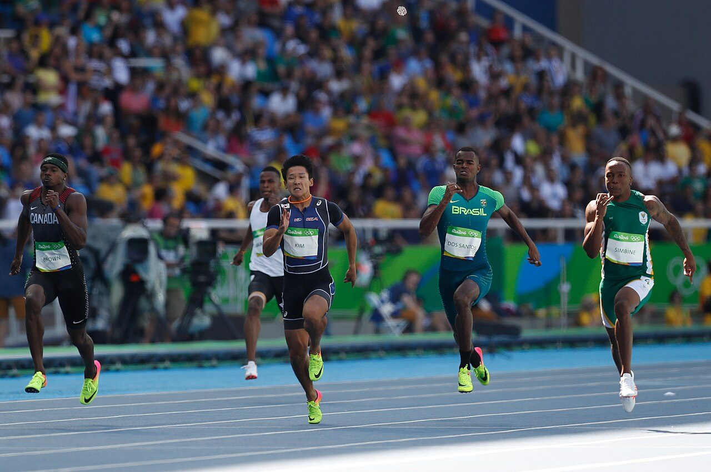
The Lab 100M · 12 min read
The math
of 100 metres.
Reaction, acceleration, top speed and the fight to hold it. A race that lasts under ten seconds, broken down phase by phase.
Read story →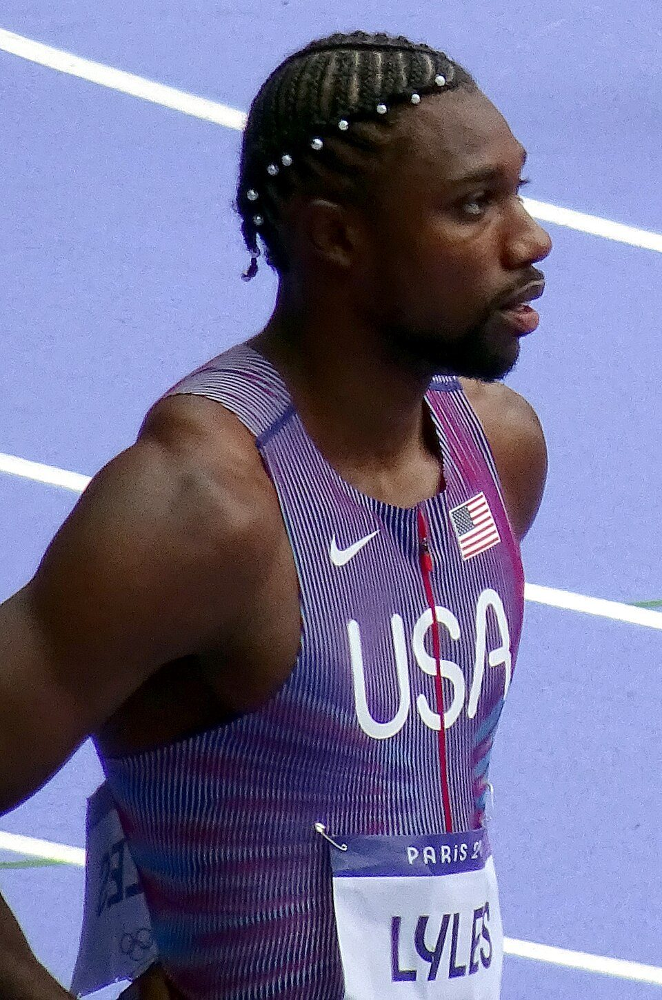
Lane 6 · 19.46Centrifugal force costs the inside lanes up to a tenth. The best 200m runners learn to lean into it, then let go.
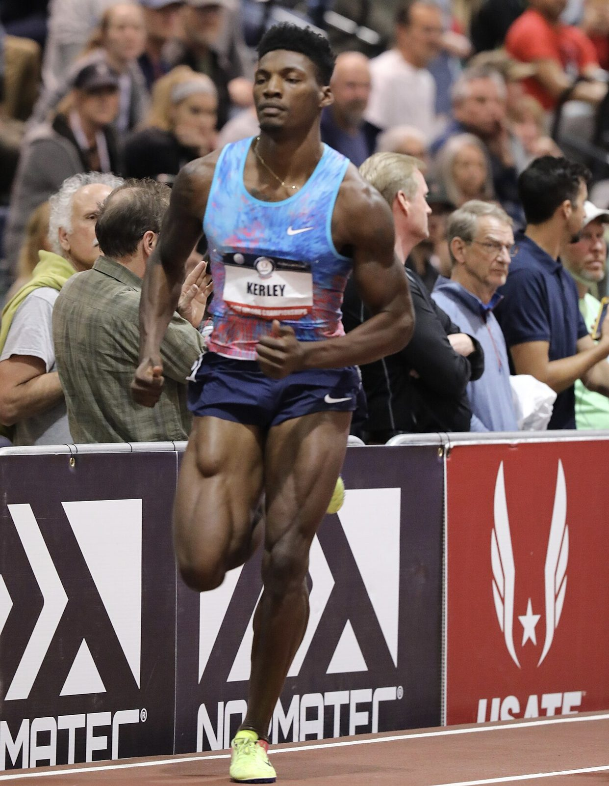
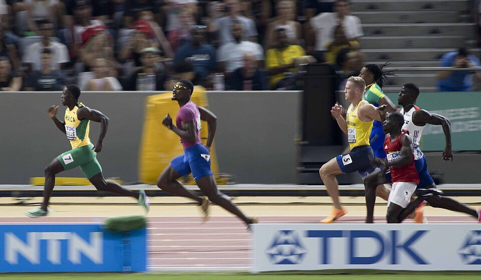
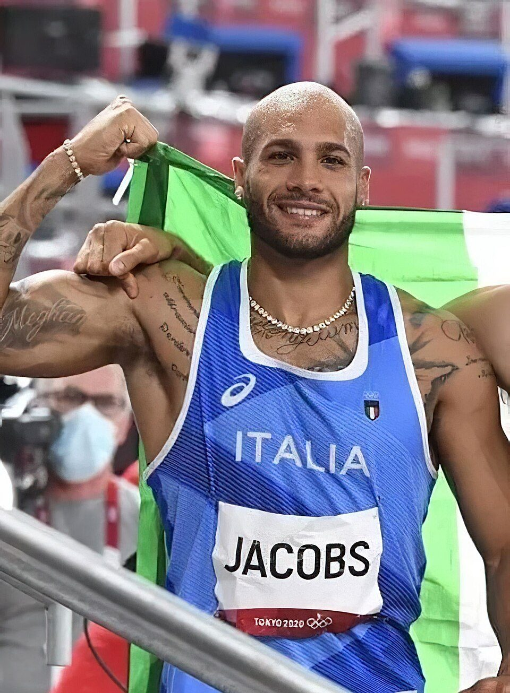
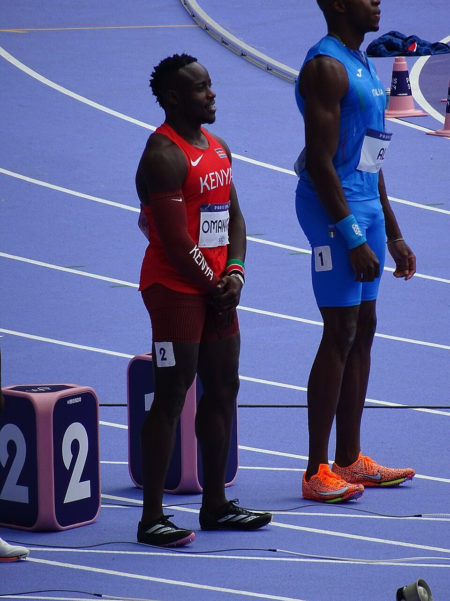
Pick a distance. Every story is filed by event.

100M · Lead
Block clearance, shin angle and the slow rise of the torso.
04The Grid · Athlete files
The men who run the fastest ten seconds in sport, photographed the way they meet the line: head on.
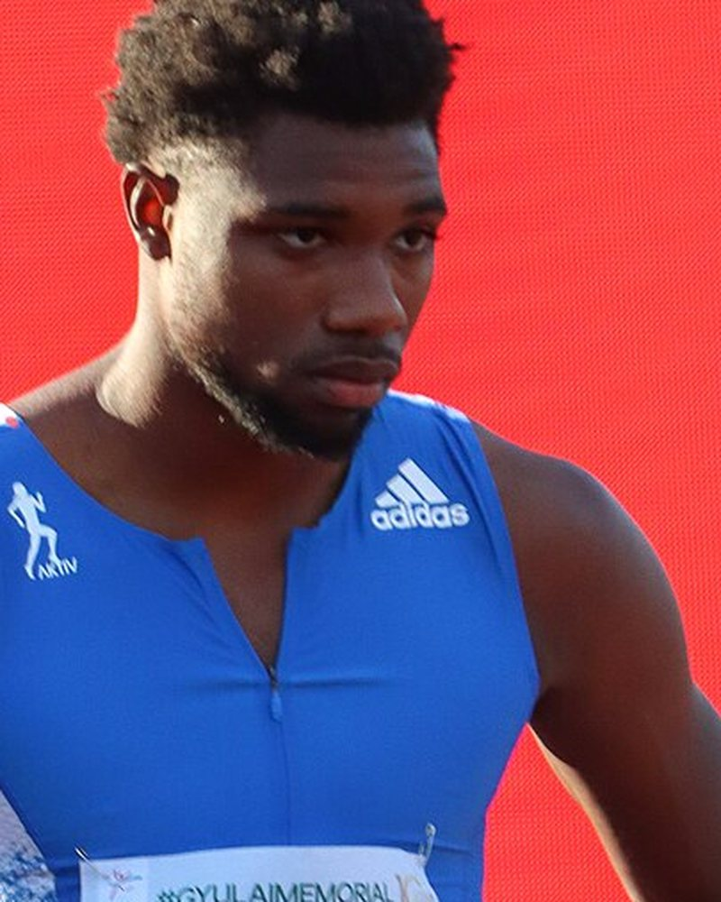
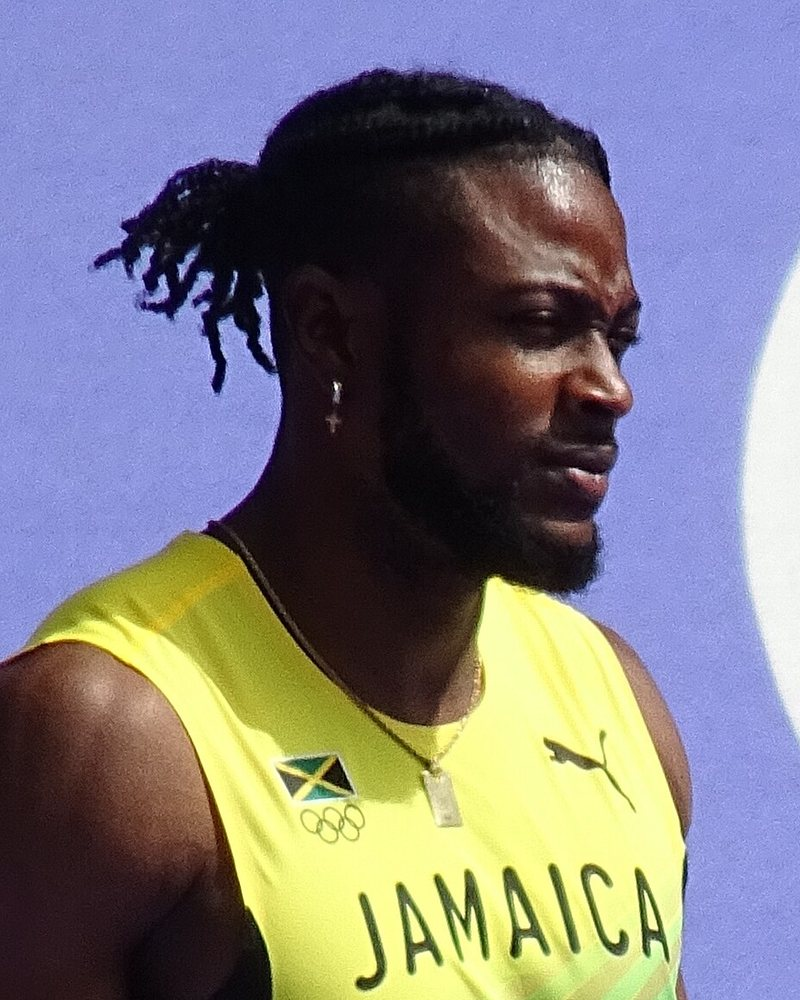
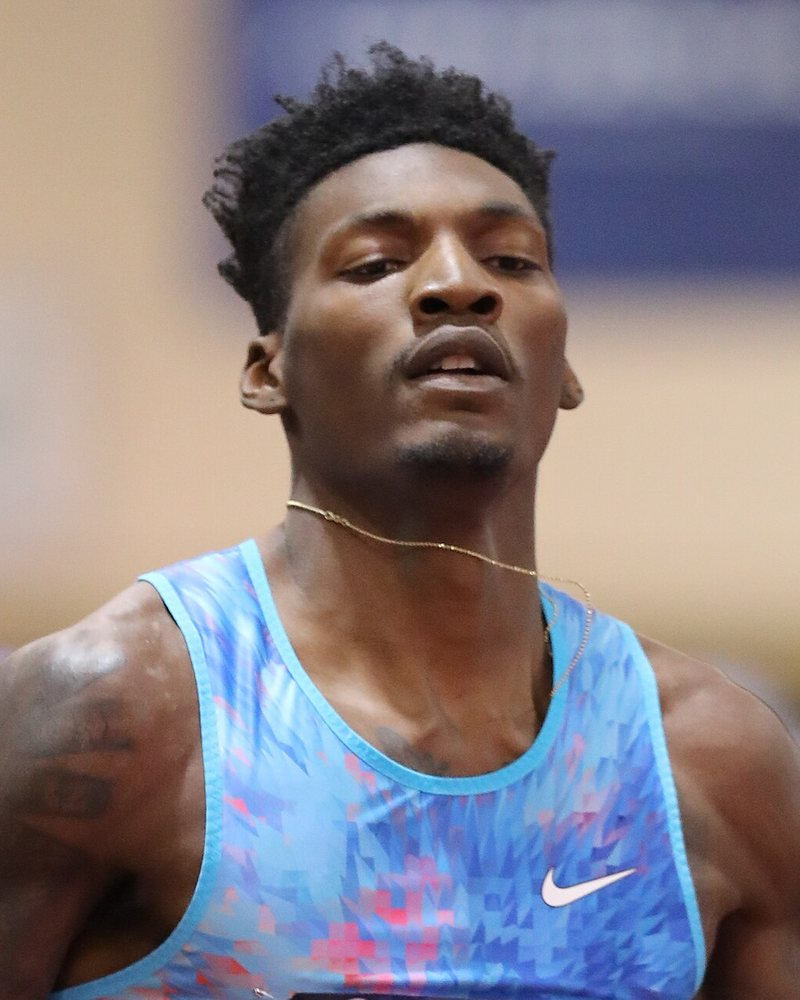
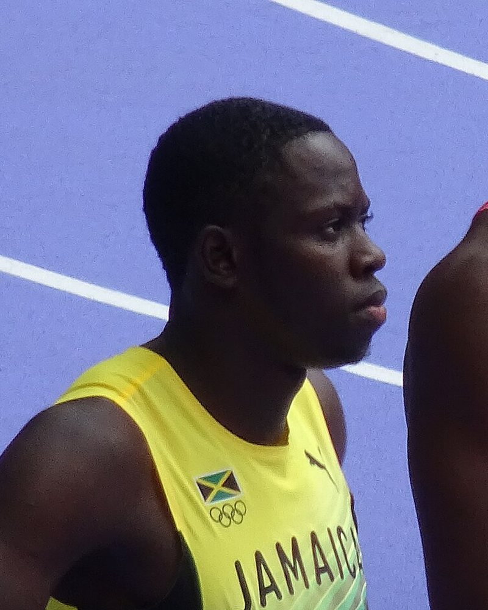
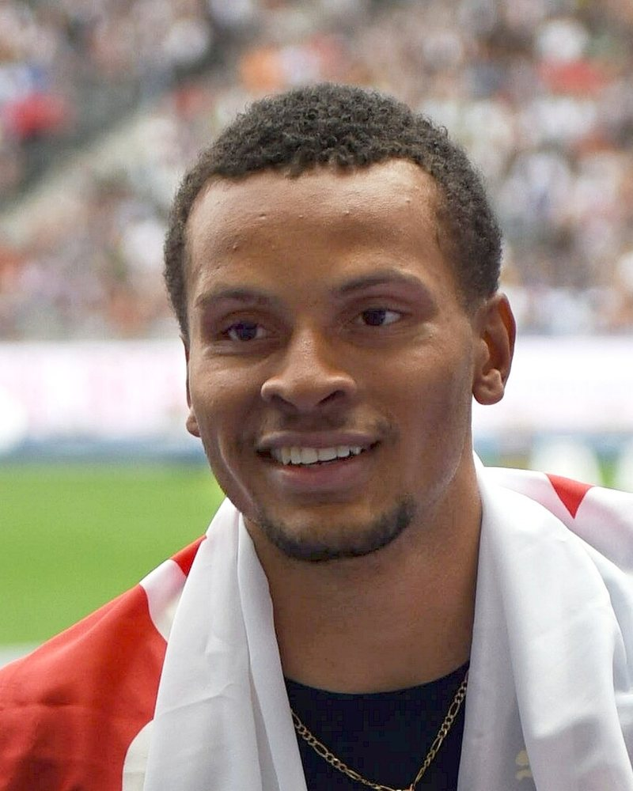
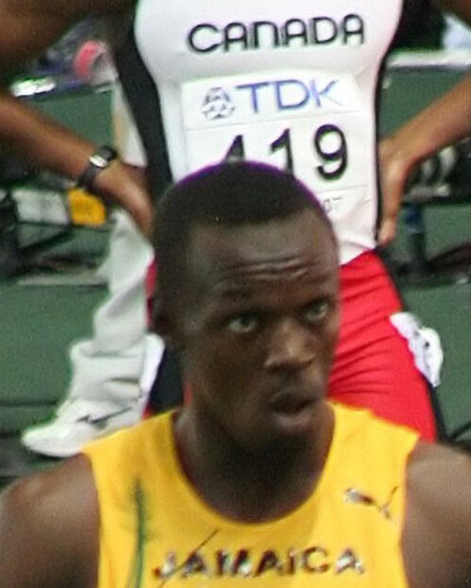
Paris 2024 · Men's 100m final · Top eight separated by 0.12s
All athlete files →05The Lab · Explainer
How the drive phase builds a sprint, step by step. Tap a phase.
Open the explainer →10m splits · Men's 100m world record
Berlin 2009 · 9.58
One email. Every Monday. The weekend's fastest times and the stories behind them.